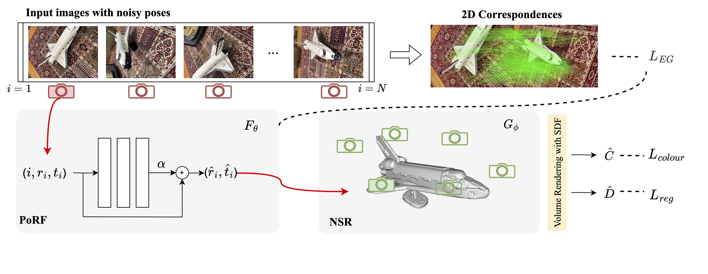

PoRF: Pose Residual Field for Accurate Neural Surface Reconstruction
Abstract
Cutting-edge neural surface reconstruction techniques, such as Voxurf, often experience a substantial drop in performance when transitioning from the ground-truth camera pose to the estimated pose (e.g., using the COLMAP SfM library). To address this challenge, we propose a novel approach that concurrently optimizes camera poses and neural reconstruction. To ensure a fair comparison with existing methods that optimize both pose and Neural Radiance Fields (NeRF), such as BARF, SPARF, Nope-NeRF, and L2G-NeRF, we employ a two-stage pipeline. In the initial stage, we utilize identical initial camera poses for all methods to initialize the pose estimation. Subsequently, in the second stage, we fix the refined camera poses obtained by all methods and apply the same reconstruction technique, Voxurf, for optimizing and extracting the object's surface. As illustrated in the accompanying figure, our refined camera pose results in the lowest Chamfer Distance.
Method
We joinly optimize camera poses and neural surface reconstruction (NSR), which builds upon NeuS. Our contributions to this baseline include: First, we propose Pose Residual Field (PoRF) that uses an MLP to regress the pose residual, instead of optimising the randomly initialized pose residuals directly as in previous methods. Second, we propose an epipolar geometry loss (L_EG) based on the feature correspondences (exported from COLMAP, no additional overhead) to enhance supervision. The pipeline is illustrated in the following figure.

PoRF takes the frame index and initial camera pose as input, and it outputs the pose residual, which is added to the initial pose to obtain the refined pose. As the MLP parameters are shared for all frames, it can learn and leverage the global pose information over the entire sequence for optimisation. This is more robust than previous methods that optimize per-frame camera pose parameters individually.
L_EG effectively imposes constraints on the alignment of pairwise relative poses, rendering it a robust regularization tool for pose optimization. Additionally, thanks to the utilization of feature correspondences, it enables achieving sub-pixel accuracy in the process.
Results
We conduct experiments on both the DTU and MobileBrick datasets. On the DTU dataset, we reduce the rotation error by 78% for COLMAP poses, leading to the decreased reconstruction Chamfer distance from 3.48mm to 0.85mm. On the MobileBrick dataset that contains casually captured unbounded 360-degree videos, our method refines ARKit poses and improves the reconstruction F1 score from 69.18 to 75.67, outperforming that with the dataset provided ground-truth pose (75.14). These achievements demonstrate the efficacy of our approach in refining camera poses and improving the accuracy of neural surface reconstruction in real-world scenarios. An example of surface reconstruction is illustrated below.
The following figure shows the pose error changes (i.e., rotation error in degrees) with training. The "(1) Baseline" denotes naive joint optimisation of per-frame (6-D) camera pose parameters and NeuS. The settings "(2, 3, 4)" demonstrate the efficacy of the proposed PoRF and L_EG. In (5), we replace the SIFT correspondences (by COLAMAP) with the learned LoFTR matches. In (6), we replace the SDF-based scene representation in NeuS with the density-based scene representation in NeRF.

Qualitative comparison
BibTeX
@article{porf_bian2023,
title={PoRF: Pose Residual Field for Accurate Neural Surface Reconstruction},
author={Jia-Wang Bian, Wenjing Bian, Victor Adrian Prisacariu, Philip H.S. Torr},
journal= {ICLR},
year={2024}
}